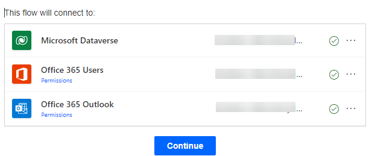

Launch a new browser instance using in-private or in-cognito mode.
If you are using Chrome or Edge, right click on the Icon in the task bar and select in-private or in-cognito.
In the new browser instance, navigate to Power Automate site and when prompted login with the Microsoft 365 lab account provided to your team.
In the top right of the screen, change the Environment to AIBuilderEnv
Choose AI Models from the navigation. If it is not visible you might have to click the … More navigation to add it to the menu.

In the main portion of the screen click on the Documents tab to filter the results.

Finally, select Extract information from Invoices

In the dialog, click on Use prebuilt model and choose Use in a flow option from the dropdown. This means we will build a re-usable Power Automate Flow to create a re-usable Invoice Flow.


There are several connections required for this demonstration to work. If you have never used that connection before the screen will resemble the following:

Click Sign in for each connection. When you click Sign in you will see a quick dialog and when you have Signed in to all three connectors it will resemble the following with Green circled checks:

After that is complete you will need to click the Continue button

This is using a pre-built model so there are no changes required to the flow presented
Click on Save in the upper-right hand corner. Give it few seconds to complete.

Then click on the Test button at the top right of your screen.

You might also get another Sign in prompt. Click Continue

Click the Import button.
Open the AIBuilderLabFiles folder that has the downloaded sample data. Then open the DocumentProcessing_Invoices_Adatum folder and select the Test folder. There is only a single invoice in there and it is a pdf file called Adatum 6.pdf file. Select it for the import.
Then click the Run flow button at the bottom

Flow is running. Then click Done

Since there were no changes made the final step in the Flow sends an email but you should see the following steps with green checks next to each step:

Click the step called Extract information from invoices. There are two sections available in the step. Inputs and Outputs. The Input section will show a binary section of text that represents the submitted pdf file. In the Outputs section you can see all the extracted fields in JSON format (used by developers).

If you want to see the email click on the 9 square in the upper right hand corner. Then choose Outlook but choose Open in new tab

In Outlook open the item title Invoice processed
Browse all the mapped fields in the email